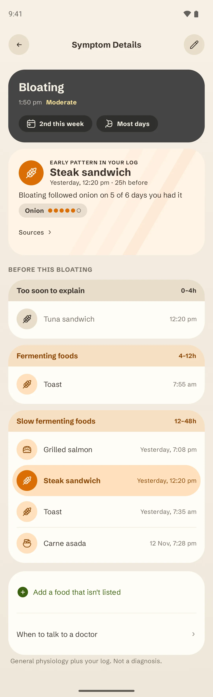
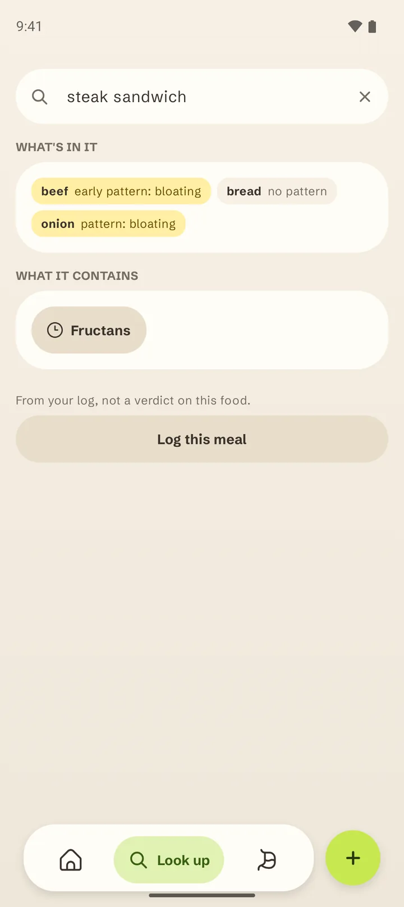
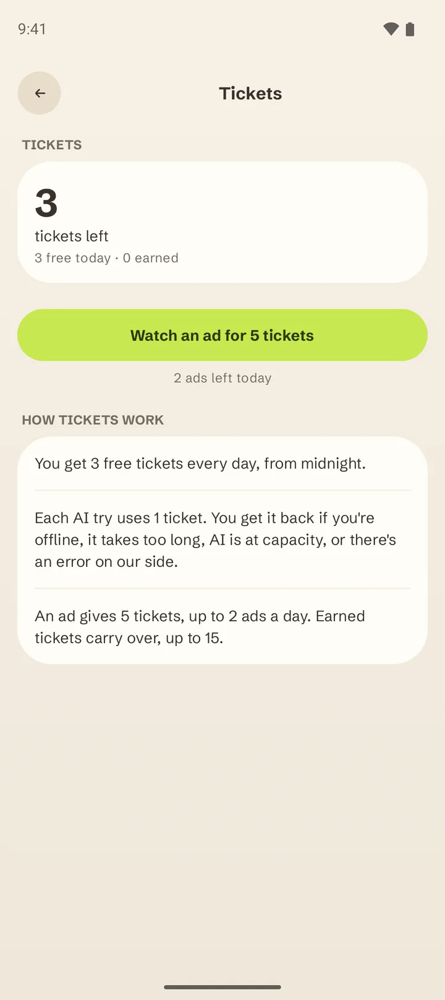

Log a meal in seconds
Type the dish. Groowl breaks it into ingredients and shows what your log says about each one.
- Your usual meals are one tap away.
- Unknown dish? Autofill with AI.
Log meals and how your gut feels. Groowl shows what tends to come before the rough days, and says so when it can't tell yet.
Type the dish. Groowl breaks it into ingredients and shows what your log says about each one.
When something comes, log it in three taps: what it is, how strong, save.
After a week of logs, each symptom shows what came before it. Until then, Groowl names nothing.



No. It's a food and symptom diary with general digestive health education. It doesn't diagnose or treat anything. Talk to a doctor before changing your diet, or if your symptoms are severe or don't go away.
It shows patterns in what you log, like "bloating followed onion on 5 of 6 days you had it", next to how often bloating came on days without it. What a pattern means for you is a question for you and your doctor.
A pattern needs days to compare: at least 7 days with logs, the food eaten on 3 separate occasions, and 3 days without it. Stronger patterns wait for 14 days. Until then Groowl shows how close you are. A guess on too few days can name the same food on your best and your worst days.
Not yet. Groowl is on Android first. Write to us if you'd like to hear when it comes to iPhone.
Free on Android, no account. Logging and patterns are free for good; AI has 3 free tickets a day. A week from now, your log has something to show you.